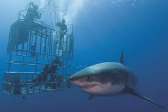

My Most Epic Bucket List
Conquer your fears and try new things!
1. Ride in a Hot Air Balloon
Soaring high above the earth in a hot air balloon offers a breathtaking perspective unlike any other. From sunrise views over serene landscapes to colorful balloon festivals, this adventure is a serene yet thrilling way to experience the beauty of the world from above.2. Try Swimming With Sharks
For the ultimate adrenaline rush, stepping into a shark cage plunges you into the heart of the ocean, face-to-face with some of the most awe-inspiring creatures on Earth. Feel the thrill of seeing great white sharks in their natural habitat, all while staying safe behind the sturdy bars of the cage.

3. Walk on the Great Wall of China
Take a walk through history on the Great Wall of China, one of the most iconic architectural marvels in the world. Stretching over 13,000 miles, this ancient structure offers incredible views and a glimpse into China’s rich heritage.
4. Stairway to Heaven, HI
Also known as the Haiku Stairs, this legendary hike in Oahu is both challenging and rewarding. With its steep ascent and panoramic views of lush Hawaiian mountains and coastline, it’s a once-in-a-lifetime trek that will leave you in awe of nature’s majesty.
5. Swim with Dolphins In Mexico
Connecting with dolphins in their natural habitat is a magical experience that combines fun with a sense of wonder. Whether you're splashing alongside them in the open ocean or a guided sanctuary, these intelligent creatures leave lasting memories.
Book a tour here.
6. Go White Water Rafting
Navigate roaring rapids and feel the rush of adrenaline as you tackle the twists and turns of white water rafting. From beginner-friendly rivers to extreme courses, this adventure guarantees excitement and teamwork in stunning natural settings.

To book a tour, go to this website.
7. Swim In All Five Oceans
Embark on the ultimate aquatic adventure by swimming in the Atlantic, Pacific, Southern, Indian, and Arctic Oceans. Each offers a unique experience, from tropical waters and coral reefs to the icy thrill of polar swims, connecting you to the vastness of our planet’s waters.
- Atlantic Ocean
- Key points about the Caribbean Sea for swimming:
- Clear water: The Caribbean boasts exceptional water clarity, allowing for great underwater visibility.
- Warm temperatures: Consistent warm water throughout the year makes swimming comfortable.
- Calm conditions: Generally calmer waters with less strong currents compared to other oceans.
- Pacific Ocean
- Southern California: Popular beaches like Santa Monica, Venice, and Newport Beach have warm water temperatures in the summer, averaging around 70°F. Long Beach has some of the highest water temperatures year-round.
- Waimea Bay, Hawaii: In the summer, the bay waters are calm and ideal for swimming, snorkeling, and diving
- Southern Ocean
- The Southern Ocean is known for its strong winds, intense storms, dramatic seasonal changes, and cold temperatures. These factors play a role in regulating the global climate. The Southern Ocean extends from the coast of Antarctica north to 60 degrees south latitude.
- Indian Ocean
- See this website for the top 10 beaches here.
- Arctic Ocean
- You might want to wear a wet suit for this one!
In order to swim in the ocean, we need to keep it clean! Join us in this effort

Scroll to top